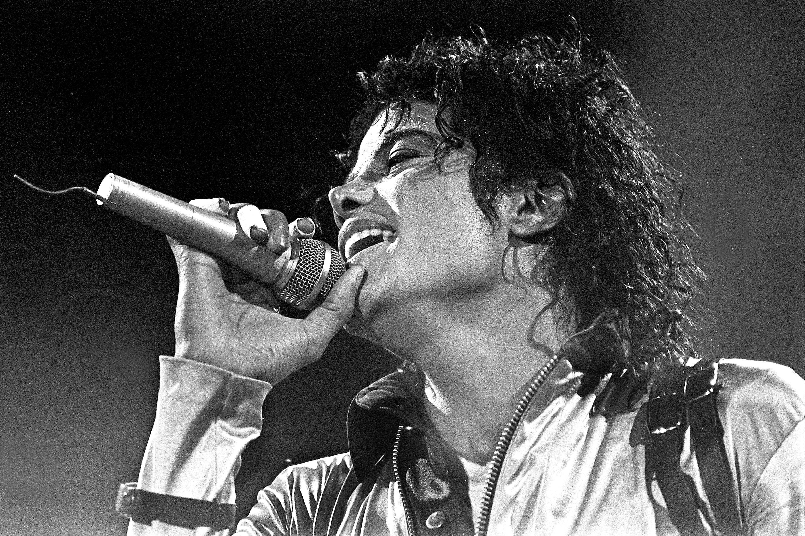

Willkommen Fans!
Willkommen auf der offiziellen Fan-Seite von Michael Jackson – dem King of Pop!
Aktuelle News
Neue Dokumentationen und Musikprojekte halten das Erbe von Michael Jackson lebendig.
Über Michael Jackson
Michael Jackson, geboren am 29. August 1958 in Gary, Indiana, war der weltberühmte „King of Pop“,
Sänger, Tänzer, Songwriter und Musikproduzent, der die Popkultur nachhaltig prägte.
Frühes Leben und Familie
Michael Joseph Jackson wurde als achtes von zehn Kindern der Jackson-Familie geboren.
Sein Vater Joseph Jackson war Kranführer und Manager der Jackson 5, seine Mutter Katherine Verkäuferin.
Bereits im Alter von sechs Jahren begann Michael seine Musikkarriere bei den Jackson 5,
die in den 1970er Jahren große Erfolge feierten, darunter der Hit „I Want You Back“.
Diana Ross entdeckte ihn 1968 beim Apollo Theatre und erkannte sein außergewöhnliches Talent.
Musikalische Karriere
Michael Jacksons internationaler Durchbruch als Solokünstler gelang 1982 mit dem Album „Thriller“,
dem meistverkauften Album aller Zeiten. Weitere erfolgreiche Alben sind „Bad“, „Dangerous“ und „HIStory“,
die alle zu den Top 100 der meistverkauften Alben gehören. Zu seinen bekanntesten Songs zählen „Billie Jean“, „Beat It“,
„Man in the Mirror“ und „Thriller“. Er revolutionierte Musikvideos und Tanzbewegungen, insbesondere den Moonwalk,
und setzte neue Maßstäbe für Bühnenauftritte.
Persönliches Leben
Michael Jackson war Vater von drei Kindern: Prince Michael Joseph Jackson Jr.,
Paris Michael Katherine Jackson und Prince Michael Joseph Jackson II („Blanket“),.
Er war bekannt für seine exzentrische Persönlichkeit und sein verändertes Aussehen,
was in den Medien oft thematisiert wurde.
Wohltätigkeitsarbeit
Jackson engagierte sich stark für wohltätige Zwecke und spendete über 300 Millionen Dollar.
Er unterstützte zahlreiche Organisationen, darunter The United Negro College Fund,
Make-A-Wish Foundation, Elizabeth Taylor AIDS Foundation und viele weitere.
Sein Hauptanliegen war die Förderung von Kindern und Bildung sowie der Schutz der Natur.
Tod und Vermächtnis
Michael Jackson starb am 25. Juni 2009 in Los Angeles an einer Überdosis Sedativa; sein Arzt Conrad Murray wurde wegen fahrlässiger Tötung verurteilt.
Sein Tod löste weltweite Trauer aus, über eine Milliarde Menschen verfolgten die Trauerfeier in den Medien.
Jackson bleibt eine der einflussreichsten Persönlichkeiten der Musikgeschichte, bekannt für seine Stimme, Tanzkunst, Musikvideos und seinen unverwechselbaren Stil.
Michael Jacksons Leben und Werk haben die Popkultur geprägt und ihn zu einer globalen Ikone gemacht, deren Einfluss bis heute spürbar ist.
